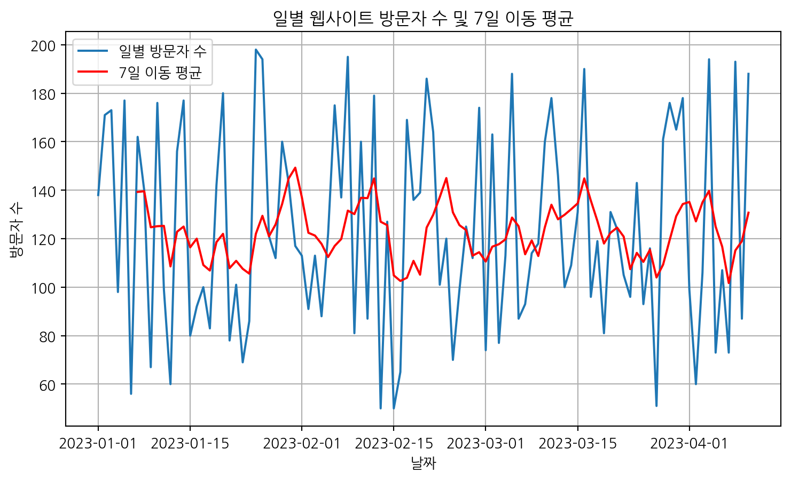

시계열 데이터(Time Series Data)는 시간 순서대로 정렬된 데이터 포인터들의 연속입니다. 예를 들어, 주식 가격, 월별 강수량, 웹사이트 트래픽 등이 시계열 데이터에 해당합니다. 이러한 데이터는 시간의 흐름에 따른 패턴이나 추세를 분석하는 데 사용됩니다.
시계열 분석의 중요성
시계열 분석은 다음과 같은 이유로 중요합니다.
예측: 과거 데이터를 기반으로 미래 값을 예측합니다. (예: 내일의 주가 예측)
패턴 인식: 계절성, 추세, 주기 등 데이터 내의 의미 있는 패턴을 파악합니다.
이상 감지: 일반적인 패턴에서 벗어나는 특이점을 탐지합니다. (예: 시스템 오류 감지)
정책 결정: 분석 결과를 바탕으로 더 나은 의사 결정을 내릴 수 있습니다.
Python을 이용한 시계열 데이터 분석 기초
이 튜토리얼에서는 Python의 pandas와 matplotlib 라이브러리를 사용하여 기본적인 시계열 데이터 분석을 수행하는 방법을 알아봅니다.
1. 필요한 라이브러리 불러오기
먼저, 데이터 분석에 필요한 라이브러리들을 불러옵니다.
import pandas as pdimport numpy as npimport matplotlib.pyplot as pltfrom datetime import datetimeimport matplotlib.font_manager as fmimport platform # 운영체제 확인을 위해 추가# --- Matplotlib 한글 폰트 설정 ---try:if platform.system() =='Windows': plt.rc('font', family='NanumGothic')elif platform.system() =='Darwin': plt.rc('font', family='AppleGothic') else: plt.rc('font', family='NanumGothic') plt.rcParams['axes.unicode_minus'] =False# 마이너스 부호 깨짐 방지print(f"Matplotlib font configured for Korean on {platform.system()}.")exceptExceptionas e:print(f"Error setting up Matplotlib font: {e}")print("Please ensure a Korean-supporting font (like NanumGothic) is installed.")if platform.system() =='Windows':print("On Windows, please install Nanum fonts (e.g., from Naver Hangeul Hangeul) and restart your kernel.")print("You might also need to clear Matplotlib's font cache (delete the .json file in ~/.matplotlib).")elif platform.system() =='Linux':print("On Linux, ensure 'fonts-nanum' is installed (e.g., via apt-get) and Matplotlib's font cache is updated.")
Matplotlib font configured for Korean on Windows.
2. 샘플 시계열 데이터 생성
분석을 위해 간단한 샘플 시계열 데이터를 생성하겠습니다. 2023년 1월 1일부터 100일간의 가상 데이터를 만듭니다.
# 날짜 범위 생성date_rng = pd.date_range(start='2023-01-01', end='2023-04-10', freq='D')# 데이터 프레임 생성data = pd.DataFrame(date_rng, columns=['date'])# 임의의 데이터 생성 (예: 웹사이트 방문자 수)data['visitors'] = np.random.randint(50, 200, size=(len(date_rng)))# 'date' 컬럼을 인덱스로 설정data.set_index('date', inplace=True)print(data.head())
이동 평균은 단기적인 변동을 완화하여 장기적인 추세를 파악하는 데 도움을 줍니다. 7일 이동 평균을 계산하고 시각화해 보겠습니다.
# 7일 이동 평균 계산data['rolling_mean_7'] = data['visitors'].rolling(window=7).mean()plt.figure(figsize=(12, 6))plt.plot(data.index, data['visitors'], label='일별 방문자 수')plt.plot(data.index, data['rolling_mean_7'], label='7일 이동 평균', color='red')plt.title('일별 웹사이트 방문자 수 및 7일 이동 평균')plt.xlabel('날짜')plt.ylabel('방문자 수')plt.legend()plt.grid(True)plt.show()print(data.head(10))

Figure 2: 7일 이동 평균을 포함한 방문자 수
visitors rolling_mean_7
date
2023-01-01 192 NaN
2023-01-02 144 NaN
2023-01-03 159 NaN
2023-01-04 186 NaN
2023-01-05 114 NaN
2023-01-06 145 NaN
2023-01-07 165 157.857143
2023-01-08 187 157.142857
2023-01-09 139 156.428571
2023-01-10 142 154.000000
5. 시계열 분해 (Decomposition) - (선택 사항)
더 고급 분석에서는 시계열 데이터를 추세(Trend), 계절성(Seasonality), 잔차(Residual)로 분해하여 각 구성 요소를 분석할 수 있습니다. statsmodels 라이브러리를 사용하면 이를 수행할 수 있습니다.
이 튜토리얼에서는 Python을 사용하여 시계열 데이터를 생성하고, 시각화하며, 이동 평균을 계산하는 기본적인 방법을 살펴보았습니다. 시계열 분석은 매우 광범위한 분야이며, 이 튜토리얼은 그 시작점에 불과합니다. 더 나아가 ARIMA, SARIMA, Prophet과 같은 고급 모델을 학습하여 더 정교한 예측 및 분석을 수행할 수 있습니다.